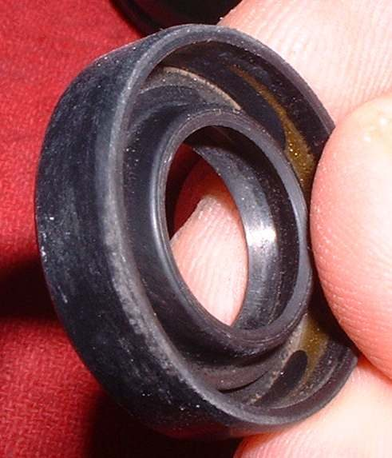
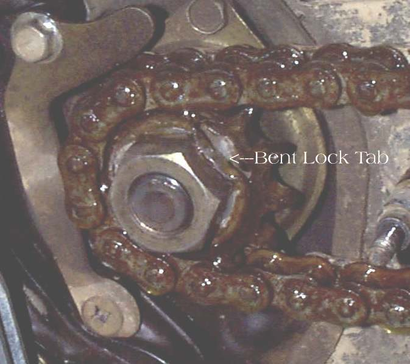

The front sprocket sits on the gearbox output shaft (countershaft) on the left of the engine. A lip seal behind it keeps engine oil in. When it leaks, oil sprays onto the chain, the sprocket cover, the swingarm and sometimes the rear tyre. Chain lube and mud also collect here, so first make sure the oil is really from the engine. The gear lever shaft seal is close by and can be mistaken for it.
Is it safe to ride?
Yes with care if only a seep. Do not ride if oil reaches the rear tyre or rear brake; clean them first.
Quick checks first
- Is the rear tyre or brake oily?
- Is the oil level above the upper mark?
- Is it engine oil, or chain lube thrown off the chain?
- Is the front sprocket nut or bolt tight?
Diagnose it step by step
1Remove the front sprocket cover and scrape out mud and grease. Clean with degreaser. Run the engine in neutral for a minute. Does fresh oil appear at the seal behind the sprocket?
- No: the oil was chain lube or comes from above. Go to Trace an oil leak.
- Yes: go to step 2.
2Is it the gear lever shaft seal (the thinner shaft just below or behind the sprocket)?
- Yes: that seal is a separate, smaller job; ask a workshop. Check the gear lever is not bent and pushing on its shaft.
- No, it is at the output shaft: go to step 3.
3Is the oil level too high, or is the breather blocked?
- Yes: correct with Check the engine oil level and Check the crankcase breather. Clean and recheck after a ride.
- No: go to step 4.
4Grip the sprocket. Can you move it in and out or up and down?
- Yes: a loose sprocket or worn shaft bearing is damaging the seal. Check the sprocket nut or bolt (K-Light 125: 10 to 16 N·m). Bearing play needs the workshop.
- No: go to step 5.
5Is the chain very tight, or the sprocket badly worn?
- Yes: a tight chain pulls the shaft and wears the seal. Set slack with Check and adjust chain slack and check Inspect sprockets.
- No: the seal has worn out. Ask for Replace the output shaft seal.
Causes, most likely first
| Cause | How to confirm | Fix |
|---|---|---|
| Worn output shaft seal | Fresh oil at the seal lip | Replace the output shaft seal |
| Overfilled oil or blocked breather | Level, hose | Check the crankcase breather |
| Chain too tight | Slack measurement | Check and adjust chain slack |
| Loose sprocket or bearing play | Sprocket moves | Replace the output shaft seal |
| Gear lever shaft seal | Oil at lever shaft | Workshop seal job |
Reference values (K-Light 125)
| Item | Value | PDF page |
|---|---|---|
| Driving (front) sprocket bolt | 10 to 16 N·m | 194 |
| Chain slack, bike upright | 20 to 40 mm | 61 |